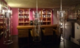

- 1
-
2

Oficina de Turismo
Maderuelo dispone de Oficina de Turismo donde podrá ser informado de qué visitar en esta Villa y sus alrededores. Los horarios de apertura son de Miércoles a Sábado,d e 10h a 17h
- Visitas concertadas
- Tfn: 921 55 60 89
A reseñar: - 1
-
2

El Secreto del Castillo
Edificio de arquitectura medieval con impresionantes vistas sobre el pantano de Linares y la Sierra. 5 habitaciones dobles, con duchas hidromasaje y 2 suites con bañera doble de hidromasaje. Amplias zonas comunes, salón con gran chimenea y distintos ambientes. Trato personalizado.
- Manutencion alojados
- Hidromasaje y cromoterapia
- Acceso minusválido y ascensor
- Tradicional horno de leña
- Jardín amurallado
- Atencion las 24 horas
Servicios que ofrece: - c/del Castillo nº22
- Maderuelo Segovia (40554)
Dirección: - 921 556 303
- 699 029 204
- elsecretodelcastillo@gmail.com
- www.elsecretodelcastillo.es
Tfno, email y página web - 1
-
2

Alfoz de Maderuelo
Restaurante situado en la entrada a Maderuelo. Disfrute de una comida de gran calidad a precios razonables, cómodamente sentado frente a unas vistas del río Riaza y la villa amurallada incomparables.
No puede perderse nuestro lechazo asado en horno tradicional del leña ni el delicioso vino de la Ribera.
- Horno castellano de leña
- Vistas Panorámicas, Jardín y terraza
- Acceso para minusválidos
- Fácil aparcamiento
Servicios que ofrece: - c/ Escuelas, 5
- Maderuelo Segovia (40554)
Dirección: - 921 556 294
- alfoz@maderuelo.com
- www.alfozdemaderuelo.es
Tfno, email y página web - 1
-
2

Alfoz de Maderuelo
Bar Cafetería situado junto a la entrada a Maderuelo.
Saboree un aperitivo o refrigerio cómodamente sentado, bien en el jardín o en la cafetería y disfrute del encanto de las vistas incomparables del río Riaza y de la villa amurallada.
- Vistas Panorámicas
- Edificio monumental
- Jardín y terraza
- Acceso para minusválidos
- Fácil aparcamiento
Servicios que ofrece: - c/ Escuelas, 5
- Maderuelo Segovia (40554)
Dirección: - 921 556 294
- alfoz@maderuelo.com
- alfoz.maderuelo.com
Tfno, email y página web - 1
-
2

Restaurante Posada del Medievo
Restaurante situado en la entrada a Maderuelo.
- Cocina Tradicional
- Edificio Histórico
Servicios que ofrece: - Plaza de San Miguel
- Maderuelo Segovia (40554)
Dirección: - 921 556 107
- posada@laposadadelmedievo.com
- www.laposadadelmedievo.com
Tfno, email y página web - 1
-
2
Posada del Medievo
Posada situado en la entrada a Maderuelo.
Cuenta con 9 habitaciones dobles con baño completo, todas diferentes entre si. La decoracion se ha basado en muebles de almoneda o artesanos, dotandola del caracter propio que exige un edificio de estas caracteristicas.
- Jardín
- Edificio Histórico
Servicios que ofrece: - Plaza de San Miguel
- Maderuelo Segovia (40554)
Dirección: - 921 556 107
- posada@laposadadelmedievo..com
- www.laposadadelmedievo.com
Tfno, email y página web - 1
-
2

Mirador de los Templarios
Bar situado en la entrada a Maderuelo.
Cuenta con bonitas vistas al Pantano del Riaza
- Cafetería
- Edificio Tradicional
Servicios que ofrece: - Plaza de San Miguel
- Maderuelo Segovia (40554)
Dirección: - 921 556 107
- posada@laposadadelmedievo..com
- www.laposadadelmedievo.com
Tfno, email y página web - 1
-
2

Hotel Capítulo 13
Te ofrecemos la posibilidad de conjugar, a través de los sentidos, verbos tan sugerentes como escapar, relajarse, descansar y soñar.
Este pequeño hotel con encanto tiene el confort y el carácter de una cuidada decoración llevada a cabo por sus jóvenes propietarios, los detalles y las texturas lo han dado un caracter único en la zona.
Rincones para conversar, leer, meditar y disfrutar plenamente de su estancia, alojarse en este hotel, es descubrir nuevas tendencias del turismo rural.
- 5 Habitaciones: 4 dobles y 1 Suite
- Vinoteca
- Restaurante
- Sala de estar con chimenea
- Spa y sauna
- Terraza-jardín
Servicios que ofrece: - c/San Miguel nº18
- Maderuelo Segovia (40554)
Dirección: - 921 556 395
- www.capitulotrece.com
- www.toprural.com
Tfno, email y página web - 1
-
2

Casa Rural La Botica
En el centro del conjunto histórico de la villa de Maderuelo, una antigua vivienda y antigua botica rehabilitada al estilo tradicional y las comodidades actuales.
Con seis habitaciones, un amplio hall, balcón con vistas al pantano de Maderuelo. Salón de reuniones, cocina, chimenea, sala lectura y juegos. Jardín, Barbacoa, Terraza, Muebles de jardín, Zona de aparcamiento.
- 6 habitaciones con baño
- Fácil aparcamiento
Servicios que ofrece: - c/ Arriba 2
- Maderuelo Segovia (40554)
Dirección: - 686 310 202
- rafagardel@hotmail.com
- www.toprural.com
Tfno, email y página web - 1
-
2

Casa Rural Aurora
En el centro del conjunto histórico de la villa de Maderuelo, una antigua vivienda de labranza rehabilitada al estilo tradicional y las comodidades actuales.
Conserva un tradicional patio empedrado donde disfrutar largas veladas veraniegas. Salón de reuniones, lectura y juegos. Dividida en dos alojamientos con salones con chimenea y cocinas totalmente equipadas.
- Cocina
- Fácil aparcamiento
Servicios que ofrece: - c/ Arriba
- Maderuelo Segovia (40554)
Dirección: - 921 556 222
- 689 989 088
- caceres@airtel.net
- www.casaruralaurora.com
Tfno, email y página web - 1
-
2

Casa Rural Maderolum
Es Maderolum una casa rural de principios del siglo XVIII,rehabilitada y modernizada para ofrecer a sus huéspedes el máximo confort y un trato agradable, un rincón entrañable donde reposar y disfrutar.
- 2 a 10 plazas
- Fácil aparcamiento
- Alojamiento, desayuno y cena
Servicios que ofrece: - c/ Santa María, 10
- Maderuelo Segovia (40554)
Dirección: - 921 55 61 49
- posada@casamaderolum.com
- http://www.maderolum.com
Tfno, email y página web - 1
-
2

Apartamentos Puerta de la Villa
9 Apartamentos situado en la entrada a Maderuelo
Cuenta con habitaciones dobles con baño completo.
- Terraza
- Vistas de Maderuelo
Servicios que ofrece: - Puerta de la Villa s/n
- Maderuelo Segovia (40554)
Dirección: - 921 556 172 - 646 464 490
- puertadelavilla@yahoo.es
- www.puertadelavilla.com
Tfno, email y página web - 1
-
2

Artesanía en Cuero
Lespicinio Abad es un artesano dedicado al trabajo del cuero
- Acabados a medida
- Fácil aparcamiento
Servicios que ofrece: - c/ Entrada de la Villa, 1
- Maderuelo Segovia (40554)
Dirección: - 921 XXX XXX
Tfno, email y página web - 1
-
2

Bar-Restaurante Veracruz
Restaurante situado junto al pantano, en el entorno de la Ermita de la Veracruz.
- Horno castellano de leña
- Vistas Panorámicas, Jardín y terraza
- Acceso para personas discapacitadas
- Fácil aparcamiento
Servicios que ofrece: - Paraje El Molino, s/n
- Maderuelo Segovia (40554)
Dirección: - 619 752 973
- restauranteveracruzmaderuelo@gmail.com
- www.restauranteveracruzmaderuelo.com
Tfno, email y página web - 1
-
2
Bar-Restaurante Veracruz
Restaurante situado junto al pantano, en el entorno de la Ermita de la Veracruz.
- Horno castellano de leña
- Vistas Panorámicas, Jardín y terraza
- Acceso para personas discapacitadas
- Fácil aparcamiento
Servicios que ofrece: - Paraje El Molino, s/n
- Maderuelo Segovia (40554)
Dirección: - 619 752 973
- restauranteveracruzmaderuelo@gmail.com
- www.restauranteveracruzmaderuelo.com
Tfno, email y página web
El transcurrir del tiempo...
ha dado a Maderuelo un creciente atractivo, por su encanto como Villa amurallada rodeada de un espacio natural difícil de encontrar en nuestro mundo moderno y urbano.
Maderuelo te invita a visitarlo y pone a tu disposición restaurantes y bares de calidad, posadas y casas rurales donde disfrutar del encanto y belleza de los distintos rincones de la Villa.
Villa monumental, edificada sobre un alargado espolón rocoso que domina los meandros del Riaza en su descenso hacia el Duero, fue fortificada durante la Edad Media, época que nos legó sus murallas y trazado sinuoso de callejas y plazuelas.
Las posibilidades para el turista son muy amplias: arte, historia, naturaleza, deportes...Sin olvidar la oferta hostelera, moderna y creciente, que abre las puertas de un turismo de calidad, tanto a la mesa, como en lo relativo al alojamiento.
La gastronomía típica de la zona es el lechazo o lechal asado, siendo el cordero de esta zona muy apreciado por su exquisito sabor y suavidad, fruto de los aromáticos arbustos y pastizales en los que se alimenta el ganado. El buen chorizo de matanza, amén de otras viandas, era una de las costumbres más arraigadas, que reunían vecinos y familias para llevar a cabo la preparación de los sabrosos embutidos, entre los que destacaba el buen jamón curado.
Esta tierra también gusta del buen vino, como atestiguan la gran cantidad de bodegas excavadas en la roca que rodean nuestra Villa. No en vano, Maderuelo linda con la demarcación de la D.O. de Ribera del Duero, donde se producen muchos de los mejores caldos de nuestro país.
Así pues, debemos alabar el buen gusto de nuestros antepasados, pioneros en una tierra que fue la Extremadura castellana, allá por el Siglo X , donde nadie se atrevía a habitar en aquella fronteriza y peligrosa tierra de nadie.